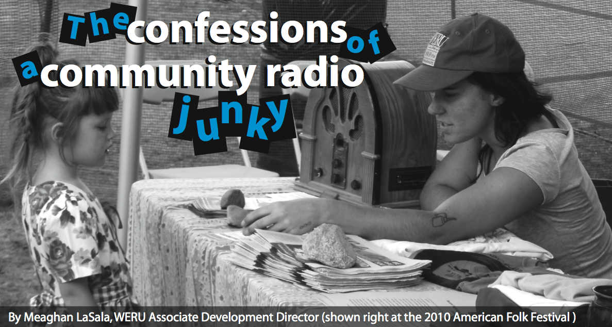

press
The Confessions of a Community Radio Junky

Digital Arts Service Corps member Meaghan Lasala has been receiving a lot of great press on her work for community radio station WERU in East Orland, Maine. Meaghan was tasked with expanding the outreach of WERU into the Bangor Area and she has been making great progress during the first 4 months of her service year.
Corps Member Meaghan Lasala Press
Organization:
WERU-FM Community Radio Corps member Meaghan Lasala has been receiving some great press in her community: Bangor, Maine. Attached are the 2 articles featuring Meaghan and her work.
SIME
When:
September 13, 2010 - September 17, 2010
Where:
San Francisco, CA
Website:
http://sime.nu/conferences/ SIME is northern Europe’s largest conference about the Internet and digital opportunities with events in Helsinki, Stockholm, Barcelona and and now for the first time in San Fransisco. SIME brings together top executives, marketing professionals, aficionados and members of the press. SIME is about how digital opportunities can convert to new business, a better world and a lot of fun.
![[node-title]](../../sites/transmissionproject.org/files/imagecache/resource-thumbnail/resources/thumbs/Picture 7.png)
Re-Imagining News & Community in the Pacific Northwest
When:
January 7, 2010 - January 10, 2010
Where:
Seattle, WA The DIGITAL AGE and a depressed economy have changed the landscape in which journalism operates. Engage others who are actively involved in addressing the vital question of how the press and community members can help each other define and embrace our evolving Pacific NW news ecology. Our Seattle program “catalysts” - Norman Rice, Tracy Record, and Chris Jordan - will be part of the conversation joining other Pacific NW journalists, civic voices, broadcasters, educators, ethnic media, students, emergent voices, digital entrepreneurs and business people.